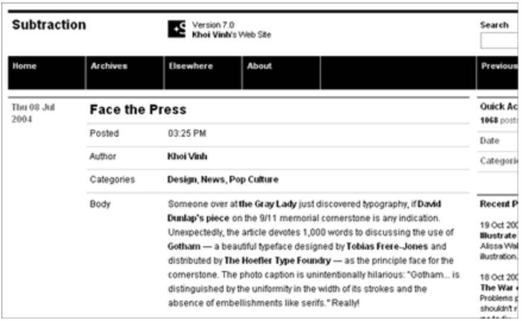

Our Manifesto
We are the Web Type Zealots and we have a calling to raise the standards of the web-type world. We have spawned to illuminate the importance of good typography on the web. We’re not the only ones who value good type, and it is time for the web world to catch up. We aim to disseminate and celebrate information, reasoning, and resources that will empower people in their design endeavors to create a better typographic web for all.
Our Origins
The following article is of utmost importance to our history, it marks the moment that the Web Type Zealots were conceived. It was this article that sparked a growing conversation around the importance of typography in web design. It was this article, coupled with our personal concerns of how typography is handled on the web, that made it clear it was time to lead this fight for a better world.
Web Design is 95% Typography
By Oliver Reichenstein
October 19, 2006
95% of the information on the web is written language. It is only logical to say that a web designer should get good training in the main discipline of shaping written information, in other words: Typography.
Back in 1969, Emil Ruder, a famous Swiss typographer, wrote on behalf of his contemporary print materials what we could easily say about our contemporary websites:
"Today we are inundated with such an immense flood of printed matter that the value of the individual work has depreciated, for our harassed contemporaries simply cannot take everything that is printed today. It is the typographer’s task to divide up and organize and interpret this mass of printed matter in such a way that the reader will have a good chance of finding what is of interest to him."
With some imagination (replace print with online) this sounds like the job description of an information designer. It is the information designer’s task “to divide up and organize and interpret this mass of printed matter in such a way that the reader will have a good chance of finding what is of interest to him”.
Macro-typography (overall text-structure) in contrast to micro typography (detailed aspects of type and spacing) covers many aspects of what we nowadays call “information design”. So to speak, information designers nowadays do the job that typographers did 30 years ago:
"Typography has one plain duty before it and that is to convey information in writing. No argument or consideration can absolve typography from this duty. A printed work which cannot be read becomes a product without purpose."
Optimizing typography is optimizing readability, accessibility, usability(!), overall graphic balance. Organizing blocks of text and combining them with pictures, isn’t that what graphic designers, usability specialists, information architects do? So why is it such a neglected topic?
Too few fonts? Resolution too low?
The main—usually whiny—argument against typographical discipline online is that there are only few fonts available. The second argument is that the screen resolution is too low, which makes it hard to read pixelated or anti-aliased fonts in the first place.
The argument that we do not have enough fonts at our disposition is as good as irrelevant: During the Italian renaissance the typographer had one font to work with, and yet this period produced some of the most beautiful typographical work:
The typographer shouldn’t care too much what kind of fonts he has at his disposal. Actually the choice of fonts shouldn’t be his major concern. He should use what is available at the time and use it the best he can.
Choosing a typeface is not typography
The second argument is not much better. In the beginning of printing the quality of printed letters was way worse than what we see on the screen nowadays. More importantly, if handled professionally, screen fonts are pretty well readable.
Information design is not about the use of good typefaces, it is about the use of good typography. Which is a huge difference. Anyone can use typefaces, some can choose good typefaces, but only few master typography.
Treat text as a user interface
Yes, it is annoying how different browsers and platforms render fonts, and yes, the resolution issue makes it hard to stay focused for more than five minutes. But, well, it is part of a web designer’s job to make sure that texts are easy and nice to read on all major browsers and platforms. Correct leading, word and letter spacing, active white space, and dosed use of color help readability. But that’s not quite it. A great web designer knows how to work with text not just as content, he treats “text as a user interface”. Have a look at Khoi Vinh’s website, and you’ll probably understand what that means:
Slightly more famous examples of unornamental websites that treat text as interface are: google, ebay, craigslist, youtube, flickr, Digg, reddit,delicious. Control over typography is not just a basic design necessity, knowing how to treat text as a user interface is the key factor for successful Web design. Successful websites manage to create a simple interface AND a strong identity at the same time. But that’s another subject.